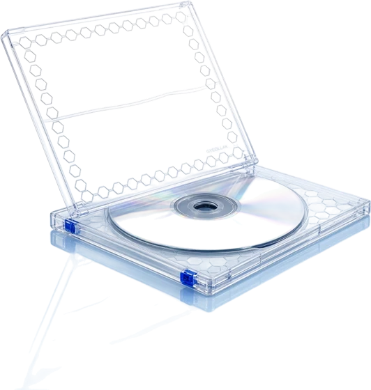
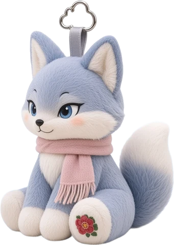
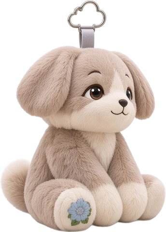
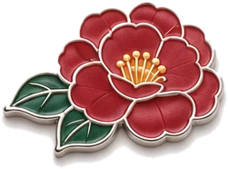

01 — SURFACE
Samemusic,
유리에 맺힌 물방울 하나가 흘러내린다. 이 한 방울이 끝까지 간다.
02 — AFTER RAIN
differentweather.
비 갠 뒤의 케이스. 맑은 면과 젖은 면이 한 장 안에 들어 있다.
03 — RYUHYUN
One missingpiece.
빠져 떨어진 한 조각. 채류현 곁에서 방울이 잠깐 머문다.
04 — HAND TO HAND
Passed handto hand.
류현에서 유성, 태준, 진우로. 네 사람의 손을 차례로 건너는 같은 노래.



